EO
Empire Granite · Stone Slab Inventory
คู่มือการใช้งาน
ระบบ EMG-O
ระบบ EMG-O
สอนขั้นตอนใช้งานจริงตั้งแต่รับหินเข้าคลัง จนถึงส่งของให้ลูกค้า — ยกตัวอย่างสถานการณ์จริงก่อน แล้วค่อยพาไปดูหน้าจอทีละขั้นตอน
EMG-O Manual · ฉบับอบรมผู้ใช้งาน
ภาพรวมระบบ
หินหนึ่งก้อน กลายเป็นแผ่นได้หลายแผ่น — ระบบตามรอยยังไง
?
สถานการณ์จริง
ร้านรับหินอ่อนล็อตใหม่เข้ามา 1 ก้อน แล้วตัดออกมาได้ 6 แผ่น ขนาดไม่เท่ากันสักแผ่นเดียว — จะรู้ได้ยังไงว่าแผ่นไหนขายไปแล้ว แผ่นไหนยังอยู่ในคลัง แผ่นไหนถูกจองไว้ให้ลูกค้าคนไหน
Material
ชนิดหิน เช่น Emperador Grey
→
Block
ก้อนหินดิบจากเหมือง วัดเป็น m³
→
Bundle
ล็อตหินที่มาด้วยกัน 1 ครั้ง
→
Slab
แผ่นเดี่ยว — มีเลขประจำตัวแผ่นละเลข
สถานะของแผ่นหิน
Available — พร้อมขาย
Hold — ถูกจองไว้
Consigned — ฝากขาย
Sold — ขายแล้ว
Cut-Loss / Remnant
จำง่ายๆ: ทุกแผ่นมีเลขซีเรียลเฉพาะตัว ระบบเปลี่ยนสถานะให้อัตโนมัติทุกครั้งที่มีการจอง ยกเลิก หรือส่งของจริง ไม่ต้องนับสต็อกเอง
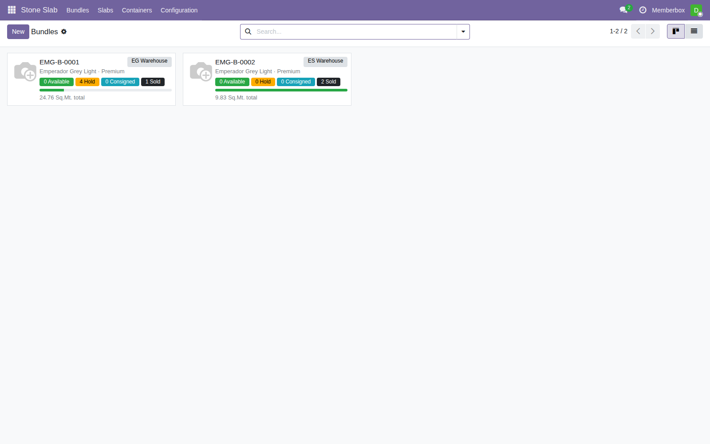
หน้าจอ Bundle ภาพรวม — เห็นสถานะแผ่นทั้งหมดในล็อตเดียว
ขั้นตอนที่ 1 · รับสินค้าเข้าคลัง
ซื้อหินเข้ามาแล้ว บันทึกเข้าระบบยังไง
1
สถานการณ์จริง
ร้านสั่งซื้อหินแกรนิต Rosa Portogallo จาก Global Stone Quarry จำนวน 5 คิว (m³) ของมาถึงคลังแล้ว ต้องเปิดระบบบันทึกก้อนหินนี้เข้าสต็อก
ออก PO → Confirm→
สร้าง Bundle ใหม่→
เลือก PO Line ที่ Confirm แล้ว→
กรอกความหนา (Thickness)→
บันทึก
- 1เปิด Purchase Order ใหม่ เลือก Vendor แล้วเลือก Block Product ของหินชนิดนั้น ใส่จำนวนคิว (m³) และราคา แล้วกด Confirm Order
- 2ไปที่เมนู Stone Slab → Bundles → New ตั้งเลข Bundle และเลือกชนิดหิน
- 3เลือก PO Line ที่เพิ่ง Confirm — ระบบจะกรอก Supplier และ Total CBM ให้อัตโนมัติ เหลือแค่กรอกความหนาที่จะตัดแผ่น
- 4เลือก Warehouse แล้วกด Save — ระบบสร้างสต็อกก้อนหินให้ทันที
ข้อควรรู้: ไม่ต้องกดยืนยันใบรับสินค้าปกติของ Odoo อีก — ระบบจะยกเลิกใบรับสินค้านั้นให้อัตโนมัติเมื่อสร้าง Bundle เสร็จ เพื่อกันสต็อกถูกนับซ้ำสองเท่า
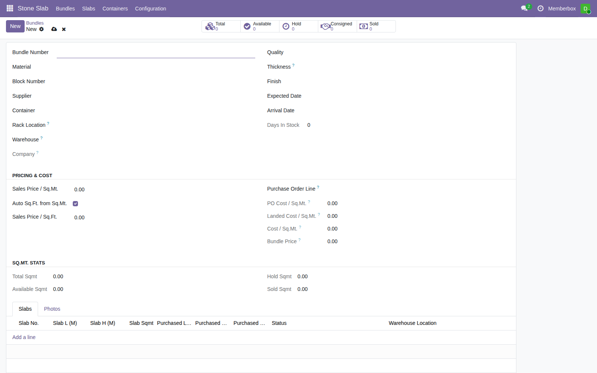
สร้าง Bundle ใหม่
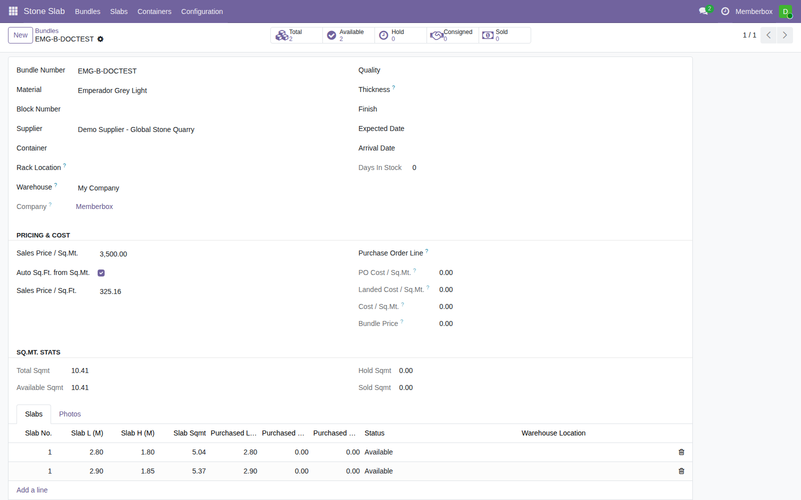
บันทึกสำเร็จ — CBM คำนวณให้อัตโนมัติ
ขั้นตอนที่ 2 · ตัดแผ่นและจัดการสต็อก
ตัดก้อนหินเป็นแผ่นแล้ว บันทึกแต่ละแผ่นยังไง
2
สถานการณ์จริง
ก้อนหิน Rosa Portogallo 5 คิวที่รับเข้ามา ถูกตัดออกมาได้ 6 แผ่น แต่ละแผ่นขนาดไม่เท่ากันเลย ต้องบันทึกแยกทีละแผ่นให้ระบบตามรอยได้
เปิด Bundle→
แท็บ Slabs → Add a line→
กรอกขนาดแผ่น→
บันทึก
- 1เปิดฟอร์ม Bundle ไปที่แท็บ Slabs แล้วกด "Add a line" เพิ่มทีละแผ่น
- 2กรอกความกว้าง-ยาวของแผ่น ระบบคำนวณพื้นที่ (ตร.ม.) ให้อัตโนมัติ
- 3กด Save — ระบบทำให้อัตโนมัติทันที: หัก CBM จากก้อนหิน, สร้างเลขซีเรียลประจำแผ่น, ตั้งเลขลำดับแผ่นไม่ให้ซ้ำกัน
- 4ดูภาพรวมทุกแผ่นได้ที่เมนู Stone Slab → Slabs แบบ Kanban ลากการ์ดเปลี่ยนสถานะได้เลย

เพิ่มแผ่นทีละแผ่นในฟอร์ม Bundle

Kanban board ดูสถานะทุกแผ่นในมุมเดียว
ขั้นตอนที่ 3 · ขายเป็นแผ่น (ไม่แปรรูป)
ลูกค้าซื้อไปติดตั้งเอง ไม่ต้องเจาะอะไรเพิ่ม
3
สถานการณ์จริง
ลูกค้าต้องการซื้อหินแกรนิต 3 แผ่น เอาไปติดตั้งเองที่หน้างาน ไม่ต้องให้ร้านตัดหรือเจาะอะไรเพิ่ม
เปิด Sale Order→
เลือกสินค้าหิน→
กด Select Slabs→
เลือกแผ่น → Confirm Selection→
Confirm SO
- 1เพิ่มบรรทัดสินค้าหินใน Sale Order — ปุ่ม "Select Slabs" จะโผล่มาให้เองต่อท้ายบรรทัด
- 2คลิก Select Slabs ระบบจะโชว์เฉพาะแผ่นที่ยังว่าง (Available) และตรงกับชนิดหินนั้นเท่านั้น
- 3เลือกแผ่นที่ต้องการ (เลือกได้หลายแผ่น) แล้วกด Confirm Selection — จำนวนในออเดอร์จะอัปเดตให้เอง
- 4กด Confirm ทั้งใบ — แผ่นที่เลือกจะถูกจอง (Hold) ให้ลูกค้าคนนี้ทันที พร้อมสร้างใบส่งของให้อัตโนมัติ
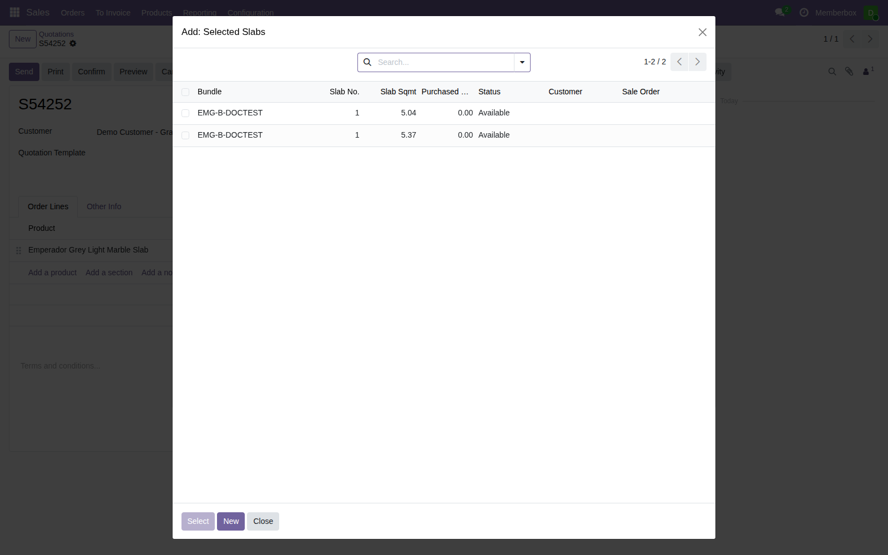
เลือกแผ่นที่ต้องการจากรายการที่ว่างอยู่
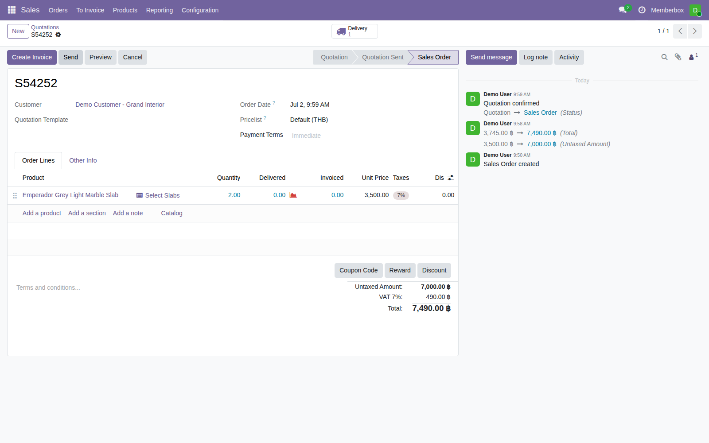
ยืนยันออเดอร์แล้ว — พร้อมส่งของ
ขั้นตอนที่ 4 · ขายพร้อมแปรรูป
ลูกค้าอยากให้ร้านเจาะช่องอ่างล้างหน้าให้ก่อนส่ง
4
สถานการณ์จริง
ลูกค้าซื้อหิน 1 แผ่น แต่อยากให้ร้านเจาะช่องสำหรับวางอ่างล้างหน้าให้เสร็จก่อนส่งมอบ
เลือกแผ่นตามปกติ→
เพิ่มบริการ "Slab Fabrication"→
Confirm SO→
Start Repair → เจาะจริง → End Repair→
ส่งของ
- 1ทำตามขั้นตอน "ขายเป็นแผ่น" ให้ครบก่อน (เลือกแผ่น + Confirm Selection) ต้องจองแผ่นเสร็จก่อนเสมอ
- 2เพิ่มบรรทัดที่ 2 เลือกสินค้า "Slab Fabrication Service" แล้วเลือกแผ่นที่จะเจาะจากช่อง "Slab to Fabricate"
- 3กด Confirm ทั้งใบ — ระบบสร้างใบสั่งงานเจาะ (Repair Order) ให้อัตโนมัติ
- 4เปิด Repair Order กด Start Repair → ทำงานเจาะจริงที่คลัง → กด End Repair เมื่อเสร็จ
สำคัญ: ต้องกด End Repair ให้เสร็จก่อนกด Validate ใบส่งของเสมอ ไม่งั้นระบบจะหาสต็อกไม่เจอ — เจาะให้เสร็จก่อน แล้วค่อยส่งของทีหลัง
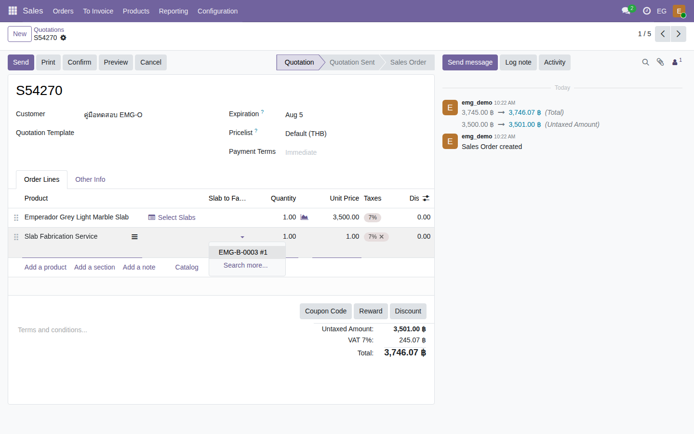
เลือกแผ่นที่จะเจาะในบริการแปรรูป
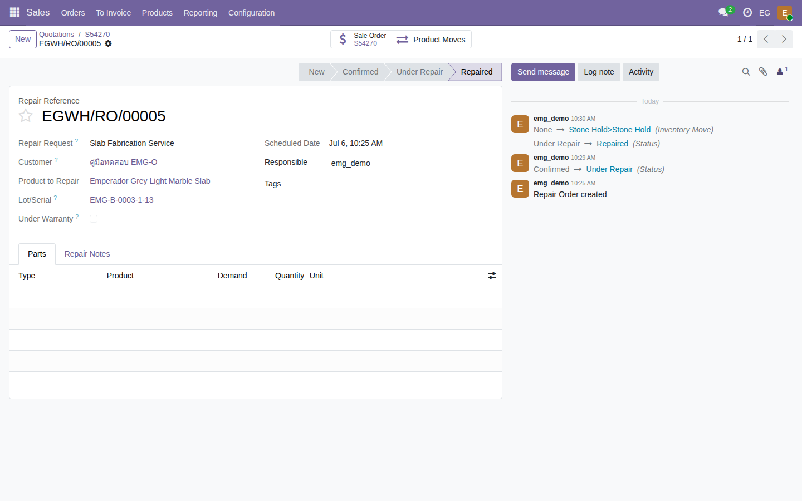
งานเจาะเสร็จแล้ว — พร้อมส่งของ
ขั้นตอนที่ 5 · ส่งของและยืนยันการรับ
ส่งของให้ลูกค้า จะรู้ได้ยังไงว่าหยิบแผ่นถูก
5
สถานการณ์จริง
ถึงเวลาส่งแผ่นหินให้ลูกค้า ต้องมั่นใจว่าหยิบแผ่นที่ถูกต้องจริง ไม่ใช่แผ่นอื่นในล็อตเดียวกัน แล้วต้องมีหลักฐานว่าลูกค้ารับของแล้วจริง
เปิดใบส่งของ→
กรอก/สแกน Scanned Serial→
Validate→
ลูกค้าเซ็นรับของ→
พิมพ์ใบยืนยันการส่ง
- 1เปิดใบส่งของ กดปุ่ม Moves หรือ Details ที่บรรทัดสินค้า จะเห็นช่อง "Scanned Serial"
- 2สแกน (หรือเลือกจาก dropdown) ให้ตรงกับเลขซีเรียลของแผ่นจริง — ถ้าไม่ตรง ระบบจะไม่ยอมให้ Validate ผ่าน
- 3กด Validate — แผ่นเปลี่ยนสถานะเป็น Sold ทันที
- 4ให้ลูกค้าเซ็นชื่อรับของในแท็บ Customer Signature แล้วกดพิมพ์ Proof of Delivery เป็นหลักฐาน
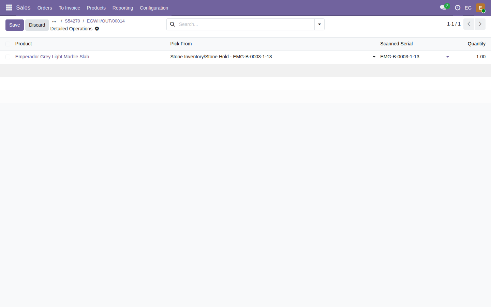
สแกนยืนยันแผ่นตรงกับเลขซีเรียลจริง
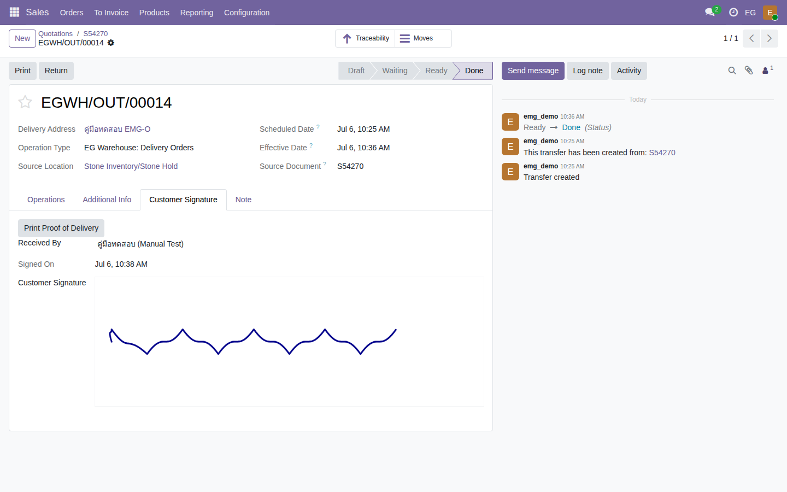
ลูกค้าเซ็นชื่อรับของ พร้อมวันเวลา
ขั้นตอนที่ 6 · ต้นทุนสินค้า
หินล็อตนี้ กำไรเท่าไหร่ต่อตารางเมตร
6
สถานการณ์จริง
หัวหน้าอยากรู้ว่าหินล็อตนี้ ซื้อมาต้นทุนเท่าไหร่ต่อตารางเมตร รวมค่าขนส่งแล้วขายไปกำไรเท่าไหร่ ไม่อยากมานั่งคำนวณเอง
- 1เปิดฟอร์ม Bundle จะเห็นส่วน "Pricing & Cost" ทันที ไม่ต้องคำนวณเอง
- 2ระบบรวมราคาซื้อจาก Purchase Order + ค่าขนส่ง (Landed Cost) แล้วหารเป็นต้นทุนต่อตารางเมตรให้อัตโนมัติ
- 3ต้นทุนของแต่ละแผ่นก็คำนวณแยกให้เองตามขนาดจริงของแผ่นนั้น
- 4ด้านล่างฟอร์มสรุปพื้นที่รวมแยกตามสถานะ (พร้อมขาย/ถูกจอง/ขายแล้ว) เห็นภาพรวมมูลค่าสต็อกได้ทันที
จำง่ายๆ: ต้นทุนต่อตารางเมตร = ราคาซื้อ + ค่าขนส่งที่กระจายตามสัดส่วนพื้นที่ — พนักงานไม่ต้องคำนวณเอง
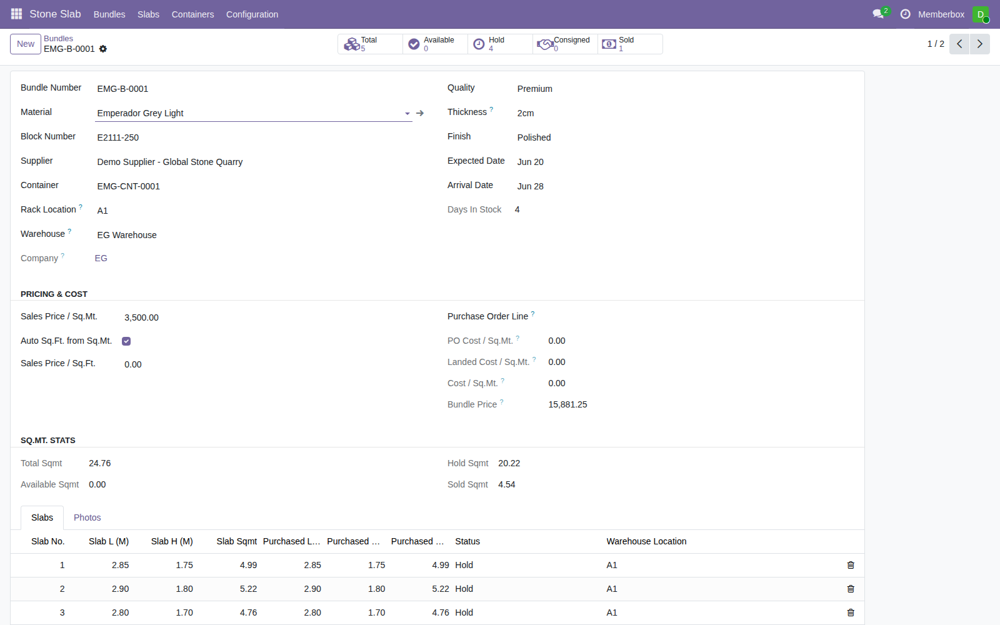
ส่วน Pricing & Cost ในฟอร์ม Bundle
ขั้นตอนที่ 7 · ขายข้ามบริษัท (EG ↔ ES)
ของอยู่คลังอีกบริษัทหนึ่ง ยังขายให้ลูกค้าได้ไหม
7
สถานการณ์จริง
ลูกค้าของบริษัท EG อยากได้แผ่นหินที่ดันไปอยู่ในสต็อกของบริษัท ES (อีกบริษัทในเครือ) พนักงาน EG จะขายให้ลูกค้าได้ไหม
เปิด SO ตามปกติ (ฝั่ง EG)→
Select Slabs เห็นสต็อก ES ปนมาด้วย→
เลือกได้เลย→
ระบบออกเอกสารซื้อ-ขายภายในให้เอง→
ส่งของตรงจากคลัง ES
- 1พนักงาน EG เปิด Sale Order ให้ลูกค้าตามปกติ แล้วกด Select Slabs
- 2หน้าต่างเลือกแผ่นจะโชว์สต็อกของทั้ง EG และ ES รวมกัน — เลือกแผ่นของ ES ได้เหมือนแผ่นปกติ ไม่ต้องสลับบริษัทเอง
- 3พอ Confirm ออเดอร์ ระบบจะสร้างเอกสารซื้อ-ขายภายในระหว่าง 2 บริษัทให้อัตโนมัติ (ราคาทุนบวก 10%)
- 4ของจะถูกส่งตรงจากคลัง ES ไปหาลูกค้าเลย ไม่ต้องขนย้ายเข้าคลัง EG ก่อน
สรุป: พนักงานหน้างานไม่ต้องทำอะไรเพิ่มเอง ระบบจัดการเอกสารบัญชีข้ามบริษัทให้ทั้งหมด ฝ่ายบัญชีเป็นคนตรวจสอบและยืนยันบัญชีอีกที
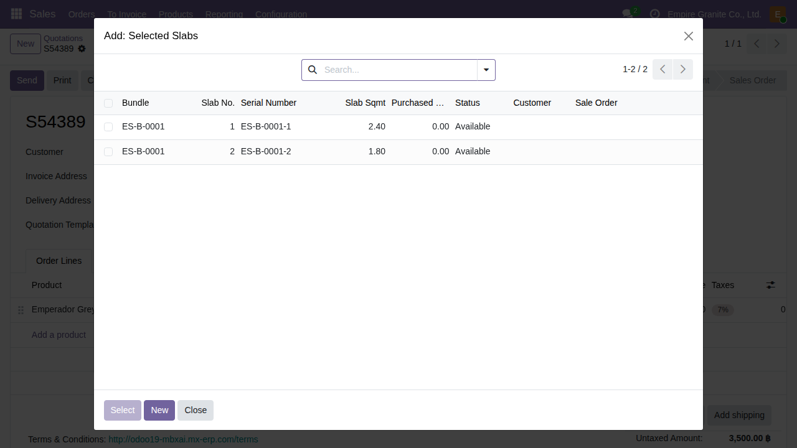
เห็นสต็อกของ ES ปนมาให้เลือกได้เลย
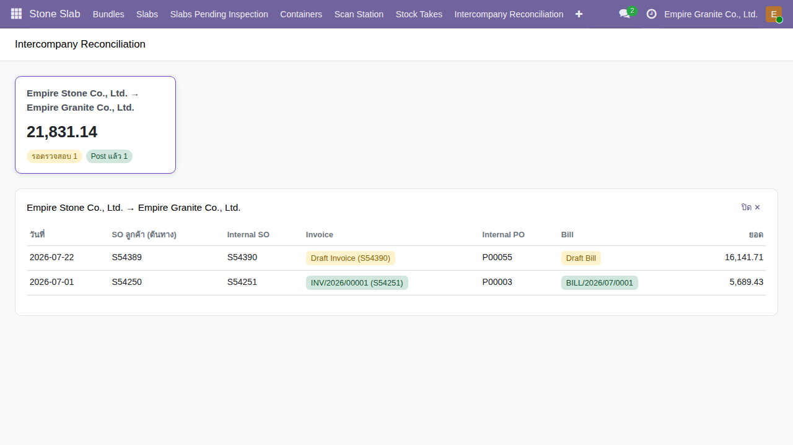
แดชบอร์ดสรุปรายการซื้อ-ขายข้ามบริษัท
ขั้นตอนที่ 8 · หน้าเว็บให้ลูกค้าเลือกแผ่นเอง
ลูกค้าอยากดูก่อนว่ามีหินที่ต้องการไหม ก่อนโทรมาสั่ง
8
สถานการณ์จริง
ลูกค้าอยากดูก่อนว่าร้านมีหินสีที่ต้องการอยู่ในสต็อกจริงไหม ก่อนโทรหรือเดินทางมาที่ร้าน
ลูกค้าเข้าเว็บ /stone-catalog→
เลือกชนิดหิน→
ดูแผ่นจริงแต่ละแผ่น→
ใส่ตะกร้า → ยืนยัน→
พนักงานตรวจสอบต่อ
- 1ลูกค้าเข้าเว็บ เห็นหน้ารวมชนิดหินพร้อมรูป จำนวนแผ่นที่พร้อมขาย และช่วงราคา
- 2คลิกเข้าไปดูแผ่นจริงแต่ละแผ่น (ขนาด ราคา รูปจริง) เลือกใส่ตะกร้าได้ทีละแผ่น
- 3ยืนยันคำสั่งซื้อ — ระบบสร้างใบเสนอราคาแบบร่างให้ทันที (ยังไม่ยืนยัน รอพนักงานตรวจก่อน)
- 4พนักงานเปิดออเดอร์นั้น กด Select Slabs จะเห็นแผ่นที่ลูกค้าเลือกไว้แล้ว ตรวจสอบแล้วกด Confirm ต่อได้เลยตามขั้นตอนปกติ
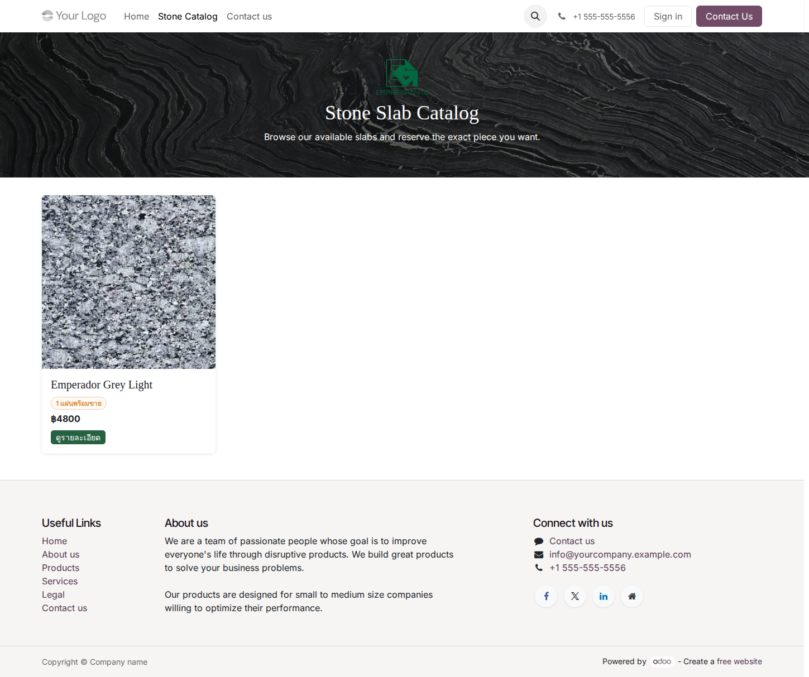
หน้ารวมชนิดหินที่มีในสต็อก
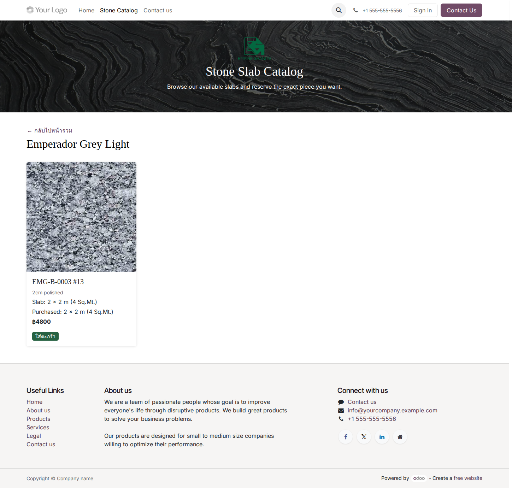
ดูแผ่นจริงแต่ละแผ่น เลือกใส่ตะกร้าได้เลย
สรุปภาพรวม
Flow หลักทั้งหมด ตั้งแต่ต้นจนจบ
รับหินเข้าคลัง→
ตัดแผ่น เก็บสต็อก→
ลูกค้าสั่งซื้อ→
เลือกแผ่น / ยืนยัน→
(ถ้ามีเจาะ ตัด ก่อน)→
ส่งของ สแกน+เซ็นรับ
แบบที่ 1 — ขายเป็นแผ่นเฉยๆ
รับหิน → ตัดแผ่น → เก็บสต็อก → ลูกค้าสั่งซื้อ → เลือกแผ่น → ยืนยัน → ส่งของ (สแกน + เซ็นรับ)
แบบที่ 2 — ขายพร้อมเจาะช่องอ่างล้างหน้า
เหมือนแบบที่ 1 + เพิ่มขั้นตอนเจาะให้เสร็จก่อนเสมอ ก่อนจะส่งของได้
มีคำถามเพิ่มเติมระหว่างใช้งานจริง ติดต่อทีมงานได้ตลอดเวลา